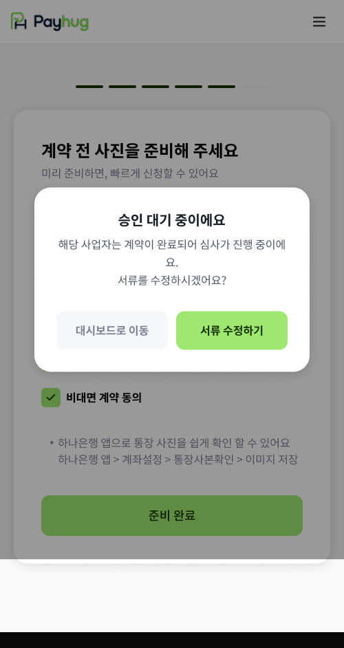

PART 3 · 신청 이후 ~ 선정산 개시
21 / 심사 대기
서류가 다 차면 심사 대기
사장님이 준비를 끝내면 자동으로 심사가 시작됩니다. 심사 중에도 서류는 고칠 수 있습니다

1
2
심사가 시작된 뒤 다시 들어오면승인 대기 중이라는 팝업이 먼저 뜹니다

3
4
서류 수정하기를 누르면등록된 6종을 골라 다시 올릴 수 있습니다
1
서류 6종이 다 차면 자동으로 심사 대기
사장님이 따로 "심사 신청" 버튼을 누르는 게 아닙니다. 마지막 서류가 채워지면 그대로 심사로 넘어갑니다
2
심사 중에도 서류를 고칠 수 있습니다
팝업에서 서류 수정하기를 누르면 됩니다. 그냥 기다리시겠다면 대시보드로 이동을 누르면 됩니다
3
고칠 수 있는 항목은 6가지
사업자등록증 · 신분증 · 선정산 전용계좌(락계좌) 통장사진 · 입금계좌 통장사진 · 플랫폼 계정 · 비대면 계약 동의
4
통장사진 항목이 둘로 나뉘어 있습니다
잘못 올렸다면 어느 쪽인지 확인하고 그 항목만 다시 올리게 안내해 주세요
심사에 걸리는 기간 — 화면에도 표시되지 않고 사내 기준도 아직 정해지지 않았습니다
협의 예정
사장님께 며칠이라고 먼저 약속하지 마세요
"심사 중이라 아무것도 못 한다"가 아닙니다 — 잘못 올린 서류는 이 화면에서 바로 고치도록 안내해 주세요
가맹점 앱 · 승인 대기 팝업 / 등록 서류 수정 화면
payhug